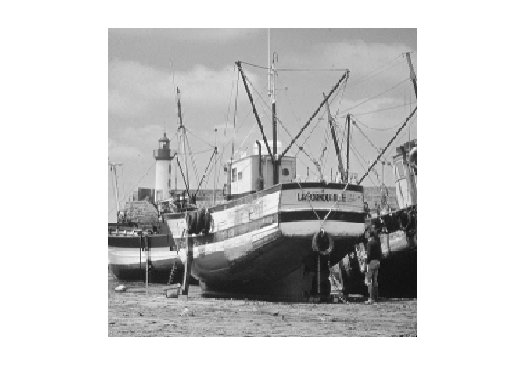
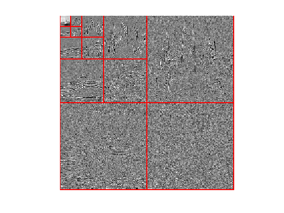
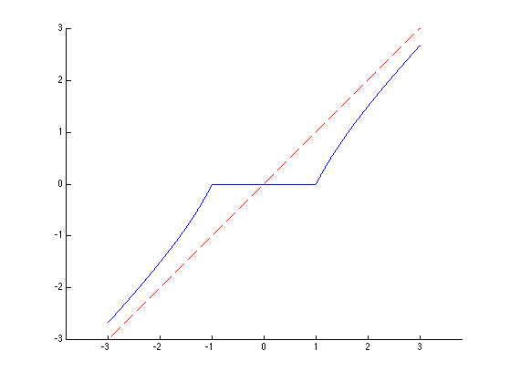
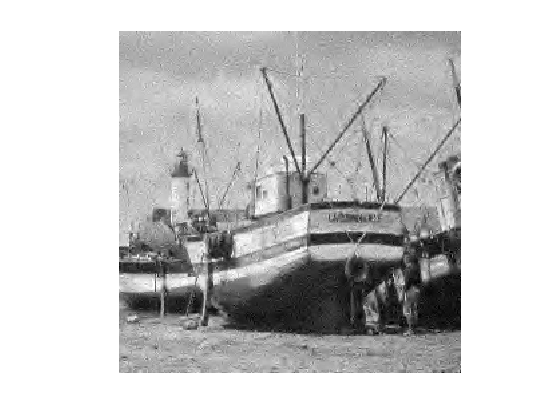
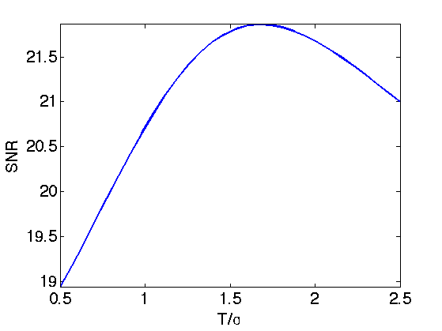
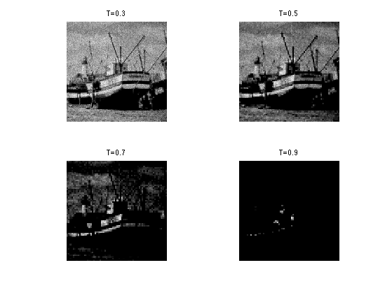
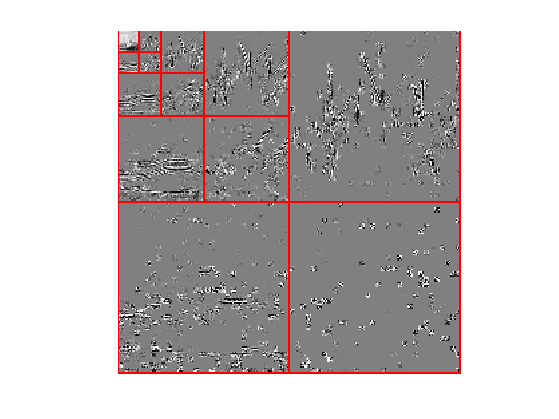
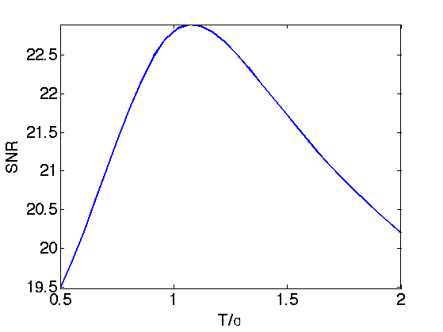
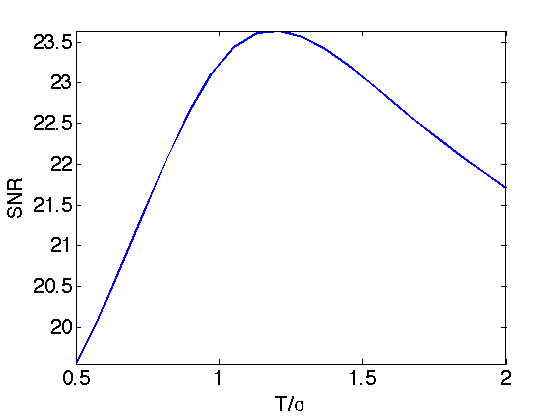

Wavelet Block Thresholding
This numerical tour presents block thresholding methods, that makes use of the structure of wavelet coefficients of natural images to perform denoising. Theoretical properties of block thresholding were investigated in [CaiSilv] [Cai99] [HallKerkPic99]
Contents
Installing toolboxes and setting up the path.
You need to download the following files: signal toolbox and general toolbox.
You need to unzip these toolboxes in your working directory, so that you have toolbox_signal and toolbox_general in your directory.
For Scilab user: you must replace the Matlab comment '%' by its Scilab counterpart '//'.
Recommandation: You should create a text file named for instance numericaltour.sce (in Scilab) or numericaltour.m (in Matlab) to write all the Scilab/Matlab command you want to execute. Then, simply run exec('numericaltour.sce'); (in Scilab) or numericaltour; (in Matlab) to run the commands.
Execute this line only if you are using Matlab.
getd = @(p)path(p,path); % scilab users must *not* execute this
Then you can add the toolboxes to the path.
getd('toolbox_signal/'); getd('toolbox_general/');
Generating a Noisy Image
Here we use an additive Gaussian noise.
Size of the image of \(N=n \times n\) pixels.
n = 256;
First we load an image \(f_0 \in \RR^N\).
name = 'boat';
f0 = rescale( load_image(name,n) );
Display it.
clf; imageplot(f0);
Noise level.
sigma = .08;
Generate a noisy image \(f=f_0+\epsilon\) where \(\epsilon \sim \Nn(0,\si^2\text{Id}_N)\).
f = f0 + sigma*randn(size(f0));
Display it.
clf; imageplot(clamp(f));

Orthogonal Wavelet Thresholding
We first consider the traditional wavelet thresholding method.
Parameters for the orthogonal wavelet transform.
Jmin = 4; options.ti = 0;
Shortcuts for the foward and backward wavelet transforms.
wav = @(f)perform_wavelet_transf(f,Jmin,+1,options); iwav = @(fw)perform_wavelet_transf(fw,Jmin,-1,options);
Display the original set of noisy coefficients.
clf; plot_wavelet(wav(f),Jmin);
Denoting \(\Ww\) and \(\Ww^*\) the forward and backward wavelet transform, wavelet thresholding \(\tilde f\) is defined as \[ \tilde f = \Ww^* \circ \theta_T \circ \Ww(f) \] where \(T>0\) is the threshold, that should be adapted to the noise level.
The thresholding operator is applied component-wise \[ \th_T(x)_i = \psi_T(x_i) x_i \] where \(\psi_T\) is an atenuation fonction. In this tour, we use the James Stein (JS) attenuation: \[ \psi_T(s) = \max\pa{ 0, 1-\frac{T^2}{s^2} } \]
psi= @(s,T)max3(1-T^2 ./ max(abs(s).^2,1e-9),0);
Display the thresholding function \(\th_T\).
t = linspace(-3,3,1024); clf; hold on; plot(t,t.*psi(t,1)); plot(t,t, 'r--'); axis equal;
Thresholding operator.
theta = @(x,T)psi(x,T).*x; ThreshWav = @(f,T)iwav(theta(wav(f),T));
Test the thresholding.
T = 1.5*sigma; clf; imageplot(clamp( ThreshWav(f,T) ));
Exercice 1: (check the solution) Display the evolution of the denoising SNR when \(T\) varies. Store in fThresh the optimal denoising result.
exo1;
Display the optimal thresolding.
clf;
imageplot(clamp(fThresh), strcat(['SNR=' num2str(snr(f0,fThresh),3)]));
Block Thresholding Operator
A block thresholding operator of coefficients \(x=(x_i)_{i=1}^P \in \RR^P\) is defined using a dijoint partition into a set of blocks \(B\) \[ \{1,\ldots,P\} = \bigcup_{b \in B} b. \] Its definition reads \[ \forall i \in b, \quad \theta_T(x)_i = \psi_T( \norm{x_b}_2 ) x_i \] where \( x_b = (x_j)_{j \in B} \in \RR^{\abs{b}} \). One thus thresholds the \(\ell^2\) norm (the energy) of each block rather than each coefficient independently.
For image-based thresholding, we use a partition in square blocks of equal size \(w \times w\).
The block size \(w\).
w = 4;
Compute indexing of the blocks.
[dX,dY,X,Y] = ndgrid(0:w-1,0:w-1,1:w:n-w+1,1:w:n-w+1); I = X+dX + (Y+dY-1)*n;
Block extraction operator. It returns the set of \( \{x_b\}_{b \in B} \) of block-partitioned coefficients.
block = @(x)reshape(x(I(:)),size(I));
Block reconstruction operator.
iblock = @(H)assign(zeros(n), I, H);
Check that block extraction / reconstruction gives perfect reconstruction.
mynorm = @(x)norm(x(:));
fprintf('Should be 0: %.3f\n', mynorm(f - iblock(block(f))) );
Should be 0: 0.000
Compute the average energy of each block, and duplicate.
repm = @(v)repmat( max3(v,1e-15), [w w]); energy = @(H)repm( sqrt( mean(mean(abs(H).^2,1),2) ) );
Block thresholding operator.
Thresh = @(H,T)psi(energy(H),T).*H; ThreshBlock = @(x,T)iblock( Thresh(block(x),T) );
Exercice 2: (check the solution) Test the effect of block thresholding on the image \(f_0\) itself, for increasing value of \(T\). (of course thresholding directly the image has no interest, this is just to vizualize the effect).
exo2;
Orthogonal Wavelet Block Thresholding
Wavelet coefficients of natural images are not independant one from each other. One can thus improve the denoising results by thresholding block of coefficients togethers. Block thresholding is only efficient when used as a soft thresholder. Here we use a Stein soft thresholder.
Display the thresholded coefficients for a threshold value \(T\) proportional to the noise level \(\si\).
T = 1.25*sigma; clf; plot_wavelet( ThreshBlock(wav(f),T), Jmin);
Define the wavelet block thresholding operator.
ThreshWav = @(f,T)iwav(ThreshBlock(wav(f),T));
Test the thresholding.
clf; imageplot(clamp( ThreshWav(f,T) ));
Exercice 3: (check the solution) Display the evolution of the denoising SNR when \(T\) varies. Store in fBlock the optimal denoising result.
exo3;
Display the result.
clf;
imageplot(clamp(fBlock), strcat(['SNR=' num2str(snr(f0,fBlock),3)]));
Translation invariant Block Thresholding
Block thresholding can also be applied to a translation invariant wavelet transform. It gives state of the art denoising results.
Shortcuts for the foward and backward translation invariant wavelet transforms.
options.ti = 1; wav = @(f)perform_wavelet_transf(f,Jmin,+1,options); iwav = @(fw)perform_wavelet_transf(fw,Jmin,-1,options);
Foward wavelet transform.
fw = wav(f);
Compute indexing of the blocks.
[dX,dY,X,Y,J] = ndgrid(0:w-1,0:w-1,1:w:n-w+1,1:w:n-w+1, 1:size(fw,3)); I = X+dX + (Y+dY-1)*n + (J-1)*n^2;
Forward and backward extraction operators.
block = @(x)reshape(x(I(:)),size(I)); iblock = @(H)assign(zeros(size(fw)), I, H);
Compute the average energy of each block, and duplicate.
repm = @(v)repmat( max3(v,1e-15), [w w]); energy = @(H)repm( sqrt( mean(mean(abs(H).^2,1),2) ) );
Block thresholding operator.
Thresh = @(H,T)psi(energy(H),T).*H; ThreshBlock = @(x,T)iblock( Thresh(block(x),T) );
Define the wavelet block thresholding operator.
ThreshWav = @(f,T)iwav(ThreshBlock(wav(f),T));
Test the thresholding.
clf; T = 1.25*sigma; imageplot(clamp( ThreshWav(f,T) ));
Exercice 4: (check the solution) Display the evolution of the denoising SNR when \(T\) varies. Store in fTI the optimal denoising result.
exo4;
Display the result.
clf;
imageplot(clamp(fTI), strcat(['SNR=' num2str(snr(f0,fTI),3)]));
Bibliography
- [CaiSil01] T. Cai and B.W. Silverman, Incorporating information on neighboring coefficients into wavelet estimation, Sankhya 63, 127-148, 2001.
- [Cai99] T. Cai, Adaptive wavelet estimation: a block thresholding and oracle inequality approach, The Annals of Statistics 27, 898-924, 1999.
- [HallKerkPic99] P. Hall, G. Kerkyacharian and D. Picard, On the minimax optimality of block thresholded wavelet estimator, Statistica Sinica 9(1999), 33-49